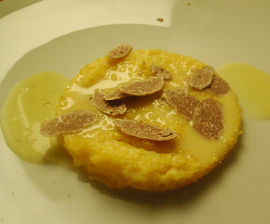

Polentaschnitten an Fonduta und weissem Trüffel
6 von 6eine polenta zubereiten, auf einem bleich ausstreichen und einige stunden auskühlen lassen. ausstechen und im ofen aufwärmen.
fonduta
300 g fontina-käsewürfel einige stunden in milch einlegen. die milch bis auf ein dl abgiessen und im wasserbad (zb. in benis neuem simmertopf) zum schmelzen bringen bis der käse fäden zieht. hitze reduzieren und 3 eigelb nach und nach darunter ziehen. mit pfeffer abschmecken und über die polenta geben.
auf dem teller möglichst grosszügig mit dem weissen trüffel krönen und sofort servieren.
